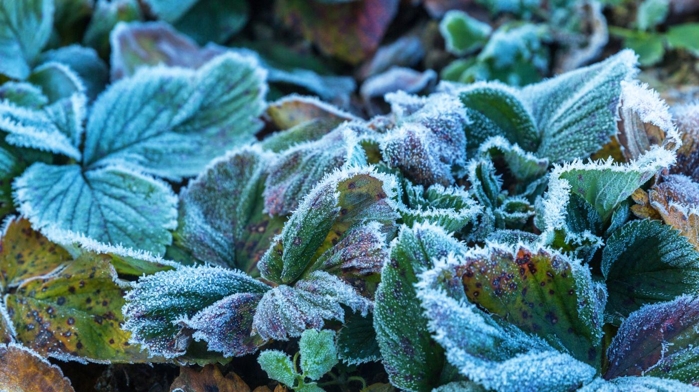
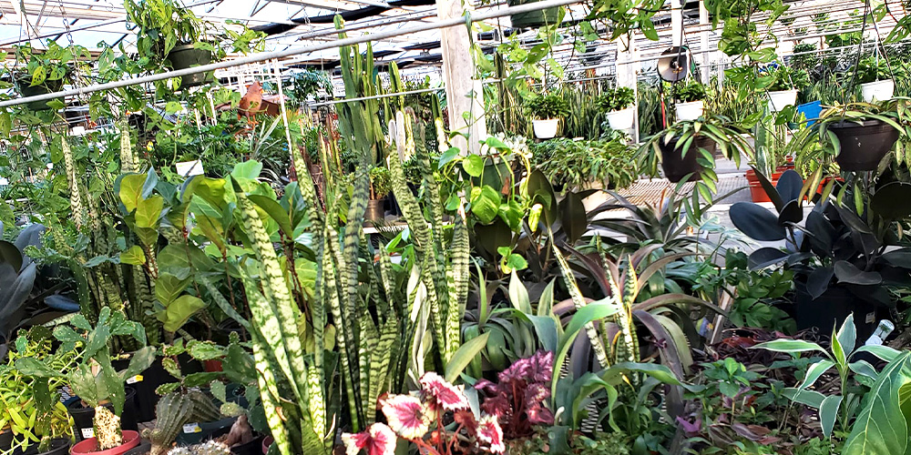
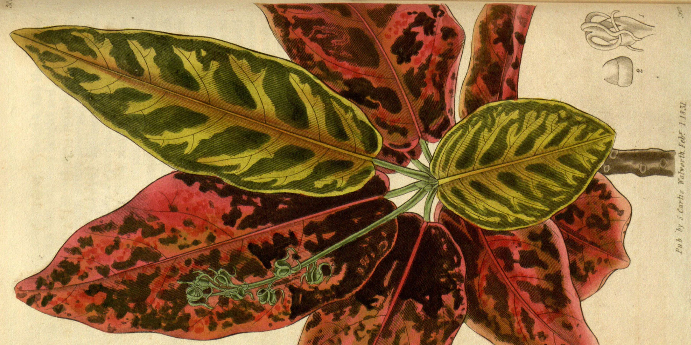

Plants are remarkable living organisms that play a crucial role in the Earth's ecosystem. They belong to the kingdom Plantae and are primarily known for their ability to perform photosynthesis, a process that converts sunlight into chemical energy stored as sugars. This ability not only sustains the plant but also supports life on Earth by producing oxygen as a byproduct, which is essential for the survival of most living organisms.
Plants come in an incredible variety of shapes, sizes, and species, ranging from tiny mosses to towering trees. They can be found in nearly every environment on Earth, from the driest deserts to the wettest rainforests. The diversity of plant life is reflected in their numerous adaptations to different environmental conditions. For example, cacti have thick, fleshy stems that store water, while mangroves have specialized roots that allow them to thrive in salty, waterlogged soils.
Beyond their ecological importance, plants have a profound impact on human life. They are a primary source of food, providing fruits, vegetables, grains, and nuts that form the basis of our diets. Many plants also have medicinal properties and are used in traditional and modern medicine to treat various ailments. Additionally, plants contribute to the economy through agriculture, horticulture, and forestry, and they are essential for the production of fibers, fuels, and building materials.
Plants also play a vital role in the cultural and spiritual lives of people around the world. They are often used in rituals, symbolize various concepts in different cultures, and are appreciated for their beauty in gardens and landscapes. In summary, plants are not only fundamental to the Earth's ecosystem but also deeply intertwined with human culture, health, and survival.
WHY DO WE NEED TO PROTECT PLANT
Protecting plants is essential for the well-being of our planet and all life forms that depend on it. Plants are the foundation of the Earth's ecosystem, playing a crucial role in maintaining environmental balance. Through photosynthesis, they produce oxygen, which is vital for the survival of most living organisms, including humans. Without plants, the oxygen levels on Earth would diminish, threatening all aerobic life forms.
Moreover, plants are key players in carbon sequestration. They absorb carbon dioxide, a greenhouse gas, from the atmosphere and store it in their tissues, helping to mitigate the effects of climate change. Forests, in particular, act as significant carbon sinks, reducing the overall concentration of greenhouse gases in the atmosphere. Protecting plants, especially large forests, is therefore critical in the fight against global warming.
Plants also provide habitat and food for countless species, forming the basis of nearly all food chains. The loss of plant diversity can lead to the collapse of ecosystems, resulting in the extinction of numerous animal species. This biodiversity is not only important for ecosystem health but also for human survival, as it ensures the resilience of ecosystems that provide essential services like pollination, water purification, and soil fertility.
Additionally, many plants have medicinal properties and are the source of various drugs used in modern medicine. The extinction of plant species could mean the loss of potential cures for diseases. Furthermore, plants contribute to human well-being by providing food, shelter, and materials, and by supporting livelihoods through agriculture, forestry, and tourism.
In summary, protecting plants is vital for maintaining environmental balance, combating climate change, preserving biodiversity, and ensuring the survival of humans and other life forms. The loss of plants would have far-reaching consequences, threatening the stability of ecosystems and the health and well-being of all living creatures.

HOW YOU CAN HELP
Supporting plant life is essential for sustaining the environment and promoting biodiversity. One of the most impactful ways to help plants is by planting more trees and native species. Trees play a crucial role in absorbing carbon dioxide, releasing oxygen, and providing habitats for a wide range of wildlife. Native plants, in particular, are adapted to local conditions, making them more resilient and beneficial to the local ecosystem. By incorporating these plants into our gardens and communities, we can enhance biodiversity, reduce the need for water and maintenance, and create a more sustainable environment.
Water conservation is another critical aspect of helping plants. Since plants rely on water for growth and survival, conserving this resource is vital. Techniques such as mulching, which helps retain soil moisture, and collecting rainwater can make a significant difference. Reducing water waste ensures that plants have the necessary hydration to thrive, especially in regions prone to drought.
Minimizing the use of harmful chemicals, such as pesticides and synthetic fertilizers, also supports plant health. These chemicals can damage soil quality, harm beneficial insects, and disrupt ecosystems. By opting for organic gardening practices, such as composting and natural pest control, we can create healthier soil and a more balanced environment for plants to grow.
Supporting reforestation and conservation efforts is another meaningful way to help plants. These initiatives work to restore degraded land, protect natural habitats, and preserve biodiversity, all of which are crucial for plant survival. Additionally, reducing our carbon footprint by conserving energy and reducing waste helps mitigate the impact of climate change on plant life.
Through these actions, we can make a significant contribution to the health and preservation of plants, ensuring a sustainable future for all living organisms.

HISTORY
The history of plants is a fascinating journey that traces the evolution of life on Earth. Plants first appeared around 500 million years ago during the Ordovician period, beginning with simple, non-vascular plants like mosses and liverworts. These early plants were small and grew close to the ground, relying on water for reproduction.
The development of vascular tissue, which allowed for the transport of water and nutrients, marked a significant evolutionary advancement. This innovation led to the emergence of larger and more complex plants, such as ferns, during the Devonian period, around 400 million years ago. The development of seeds further revolutionized plant life, enabling plants to reproduce without relying on water and allowing them to colonize a wider range of environments.
The Carboniferous period, around 300 million years ago, is known as the "Age of Ferns" and saw the rise of vast swampy forests dominated by large ferns and early gymnosperms, such as conifers. These forests eventually gave rise to the coal deposits that fueled the Industrial Revolution millions of years later.
The evolution of flowering plants, or angiosperms, during the Cretaceous period, around 140 million years ago, was another major milestone. Flowering plants diversified rapidly, becoming the dominant form of plant life and giving rise to most of the plant species we know today.
Throughout history, plants have shaped the Earth's atmosphere, climate, and ecosystems, playing a crucial role in the development of life. Their history is deeply intertwined with the evolution of all living organisms on our planet.



.jpg)